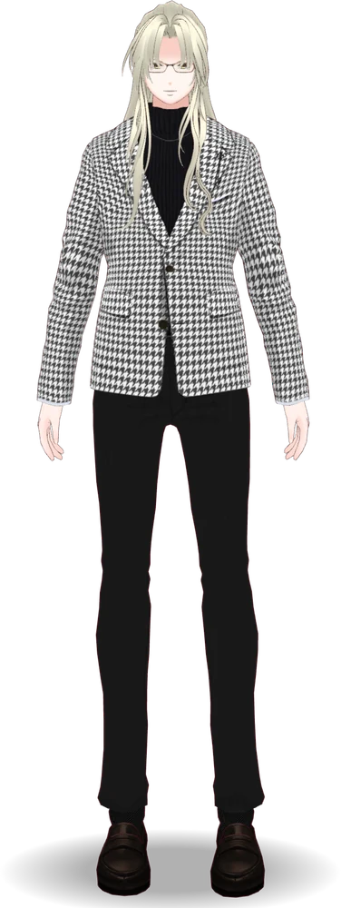
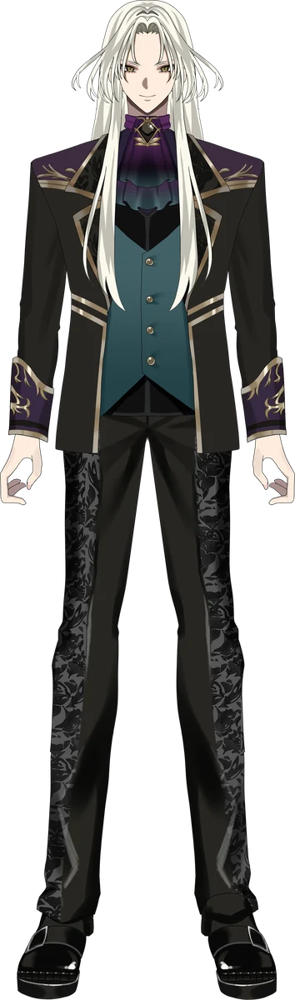

Profile
藍・W・楽歌について
歌とお芝居、ゲーム、旅行、歴史・地理が好きな男性VTuberです。

舞台役者、イベントMC、インターネットラジオDJなどの経験を経て、2025年1月25日からVTuberとして活動しています。いまはトーク、歌、レトロゲーム、声劇、そして旅をテーマに配信と動画をつくっています。
めざしているのは、仕事終わりにふらっと立ち寄れる場所。昔好きだったものを、今の自分でもう一度楽しめる時間。そんな“大人の趣味時間”をお届けしています。
基本情報
| 名前 | 藍・W・楽歌（あい・うぃんすとん・らっか） |
| 英字表記 | Ai Winston Rucker |
| 肩書き | VIRTUAL ENTERTAINER ／ VTUBER |
| 誕生日 | 10月25日 |
| 活動開始日 | 2025年1月25日 |
| 身長 | 176cm |
| 活動拠点 | 日本 |
| ファンネーム | らっかーず |
| キャッチコピー | あの頃のワクワクへ、ようこそ。 |
公式ハッシュタグ
| 用途 | タグ |
|---|---|
| 総合 | #楽歌会 |
| ファンアート | #絵らっか |
| 配信 | #楽歌見聞録 |
キャラクター設定
世を忍ぶ仮の姿（人型）で人間界をふらふら旅している男性。偽名。出身地不明。正体不明。自称・神様。
日本文化が好きなので、たびたび日本に立ち寄っては長く滞在しています。現在は昭和後期から滞在中。かつては西欧、東欧、北米あたりを転々としていました。ただし、赤道より南に行ったことはありません。
いまの衣装は、かつて東欧で貴族ごっこをしていたときのもの。歴史に造詣が深く、とくに旅先での史跡巡りを趣味としています。好きなロックバンドは the pillows。
やっていること
| コンテンツ | 内容 |
|---|---|
| AlternativeRadio | 毎週月曜21:00からYouTubeで生放送する30分のトーク番組。雑学・音楽・近況。 |
| 楽歌の城攻め見聞録 | 関東七名城をめぐる歴史Vlog。全7話予定。 |
| 歌枠・カバー | the pillows をはじめ90年代を中心に。 |
| 声劇・朗読 | 舞台や同人の経験を活かした声劇、朗読配信。 |
| レトロゲーム | 子どもの頃に遊んだ名作を、もう一度。 |
城めぐりシリーズは、動画に加えて記事版も公開しています。アクセスや休館日までまとめてあるので、お出かけ前の下調べにどうぞ。
ナレーション・MCなど、お仕事としてのご依頼については お仕事のご相談ページ をご覧ください。
活動略歴
| 年月 | できごと |
|---|---|
| 2025.01.25 | VTuber「藍・W・楽歌」として活動開始 |
| 2025.07.19 | 大規模オンライン声劇イベントを主催 |
| 2025.12 | 年末の長時間配信企画を完走 |
| 2025.12.26 | YouTubeチャンネル収益化を達成 |
| 2026.01 | レストラン貸切のディナーショーに出演 |
| 2026.03.09 | トーク番組「AlternativeRadio」放送開始 |
| 2026.05.29 | YouTubeチャンネル登録者1,000人を達成 |
| 2026.08 | Live2Dモデルの使用を開始 |
| 2026.08.16 | 江古田クラブドロシーにて、リアルライブイベントに初出演 |
| 2026.09.16 | 「ピロウズVカバーフェス2026」を主催 |
使用しているモデル
キービジュアルと、配信で使っているモデルは別のものです
いちばん上に載せているキービジュアル（立ち絵）は、ビジュアルの基準となるイラストです。配信では使用していません。「配信でこの衣装を着ている」という意味ではないので、紹介の際はご注意いただけると助かります。
| モデル | 用途・位置づけ | 制作 |
|---|---|---|
| キービジュアル（立ち絵） | ビジュアルの基準。配信では使用していません（デビュー時より） | @hori_games25 |
| 3Dモデル | 歌枠配信で主に使用。千鳥格子のジャケットに眼鏡（デビュー時より） | 本人（自作） |
| Live2Dモデル | ゲーム配信で主に使用。キービジュアル準拠（2026年8月より） | @ikada_nami |
| SDモデル | サムネイルなどに使用 | — |
Live2Dモデルは、クラウドファンディングでご支援いただいて制作したものです。ご支援くださったみなさま、あらためてありがとうございました。


好きなもの・苦手なもの
| 音楽 | the pillows、ロックンロール、懐メロ |
| 趣味 | 旅行、グルメ、ドライブ、歴史 |
| ゲーム | レトロゲーム、ストラテジーゲーム、クイズゲーム |
| 得意なこと | どこでもすぐ寝られる |
| 苦手なもの | ホラー、絶叫マシン、高いところ、暗いところ、虫 |
歴史好きで史跡巡りが趣味なのに、高いところと暗いところが苦手。天守閣も、地下の遺構も、なかなかの試練です。それでも行きます。
リンク
クレジット
CREDIT
- イラスト
キービジュアル - @hori_games25
- Live2D
- @ikada_nami
- 3Dモデル
- 本人（自作）
- ロゴ・デザイン
- 謎のデザイナーX
- BGM・効果音
- MusMus ／ 効果音ラボ ／ OtoLogic ／ bgmusic.jp ／ Kyatto（@KyattoWorks） ／ さんうさぎ（@Sanusagi） ／ BGMer（@BGMer_net） ／ Tak_mfk（@Tak_mfk） ／ YouTube オーディオ ライブラリ
お問い合わせ
出演依頼、コラボ、その他のお問い合わせは 問い合わせフォーム または X のDMからご連絡ください。企業・法人からのご相談は、対応領域と実績をまとめた お仕事のご相談ページ をご覧ください。